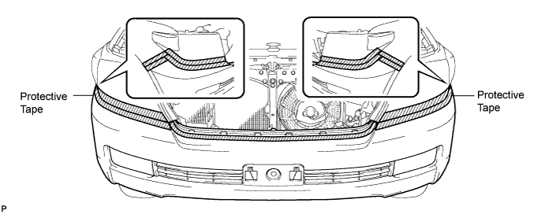
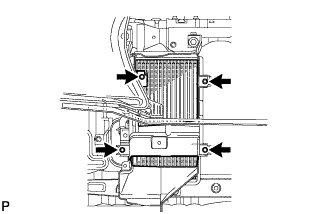
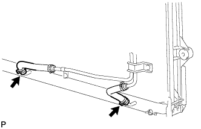
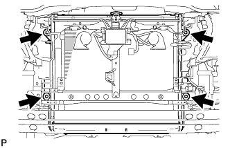

RADIATOR > REMOVAL |
| 1. REMOVE FRONT FENDER SPLASH SHIELD SUB-ASSEMBLY LH |
 |
Remove the 3 bolts and screw.
Turn the clip indicated by the arrow in the illustration to remove the fender splash shield.
| 2. REMOVE FRONT FENDER SPLASH SHIELD SUB-ASSEMBLY RH |
| 3. REMOVE NO. 1 ENGINE UNDER COVER SUB-ASSEMBLY |
 |
Remove the 10 bolts and under cover.
| 4. REMOVE UPPER RADIATOR SUPPORT SEAL |
 |
Remove the 7 clips and radiator support seal.
| 5. DRAIN ENGINE COOLANT |
Loosen the radiator drain cock plug and 2 cylinder block drain cock plugs.
Remove the radiator cap. Then drain the coolant.
Tighten the 2 cylinder block drain cock plugs.

Tighten the radiator drain cock plug by hand.
| 6. REMOVE V-BANK COVER |
 |
Remove the 2 cap nuts and V-bank cover.
| 7. REMOVE FRONT BUMPER WINCH COVER SUB-ASSEMBLY (w/ Winch) |
| 8. REMOVE RADIATOR GRILLE |
 |
Put protective tape around the radiator grille.
Remove the 3 screws.
Detach the 2 clips and 8 claws, and remove the radiator grille.
| 9. REMOVE FRONT BUMPER COVER |
Put protective tape around the bumper cover.

Using a T30 "TORX" socket, remove the 6 screws.

Remove the 3 clips, 4 screws and 4 bolts.
w/o TOYOTA Parking Assist-sensor System, w/o Fog Light:
Detach the 10 claws and remove the bumper cover.
w/ TOYOTA Parking Assist-sensor System or w/ Fog Light:
Detach the 10 claws, disconnect the No. 4 engine room wire connector and remove the bumper cover.

 |
w/ Headlight Cleaner System:
Disconnect the headlight cleaner hose and remove the bumper cover.
| 10. REMOVE FRONT BUMPER COVER (w/ Winch) |
Put protective tape around the bumper cover.

Using a T30 "TORX" socket, remove the 6 screws.
Remove the 3 clips, 4 screws and 4 bolts.
Detach the 10 claws.
w/o TOYOTA Parking Assist-sensor System, w/o Fog Light:
Disconnect the winch control wire connector and remove the bumper cover.
w/ TOYOTA Parking Assist-sensor System or w/ Fog Light:
Disconnect the No. 4 engine room wire connector and winch control wire connector and remove the bumper cover.

| 11. REMOVE TRANSMISSION OIL COOLER AIR DUCT (w/ Air Cooled Transmission Oil Cooler) |
 |
Remove the 4 bolts and oil cooler air duct.
| 12. REMOVE RADIATOR SIDE DEFLECTOR RH (w/o Air Cooled Transmission Oil Cooler) |
 |
Using a clip remover, remove the 4 clips and move the side deflector so that the radiator can be removed in the step below.
| 13. REMOVE RADIATOR SIDE DEFLECTOR LH |
 |
Using a clip remover, remove the 4 clips and move the side deflector so that the radiator can be removed in the step below.
| 14. REMOVE NO. 1 RADIATOR HOSE |
 |
Remove the radiator hose.
| 15. REMOVE NO. 2 RADIATOR HOSE |
 |
Remove the radiator hose.
| 16. DISCONNECT OIL COOLER TUBE (w/ Air Cooled Transmission Oil Cooler) |
 |
Detach the claw to open the flexible hose clamp, and then remove the 2 bolts to disconnect the oil cooler tube from the fan shroud.
| 17. REMOVE FAN SHROUD |
 |
Loosen the 4 nuts holding the fluid coupling fan.
Remove the fan and generator V-belt (Click here).
 |
Disconnect the reservoir hose from the upper side of the radiator tank.
Remove the 2 bolts holding the fan shroud.
Remove the 4 nuts of the fluid coupling fan, and then remove the shroud together with the coupling fan.
Remove the fan pulley from the water pump.
| 18. DISCONNECT INLET NO. 3 OIL COOLER HOSE (for Automatic Transmission) |
 |
Disconnect the oil cooler hose.
| 19. DISCONNECT OUTLET NO. 2 OIL COOLER HOSE (for Automatic Transmission) |
Disconnect the oil cooler hose.
| 20. REMOVE RADIATOR ASSEMBLY |
 |
Remove the 4 bolts and radiator.